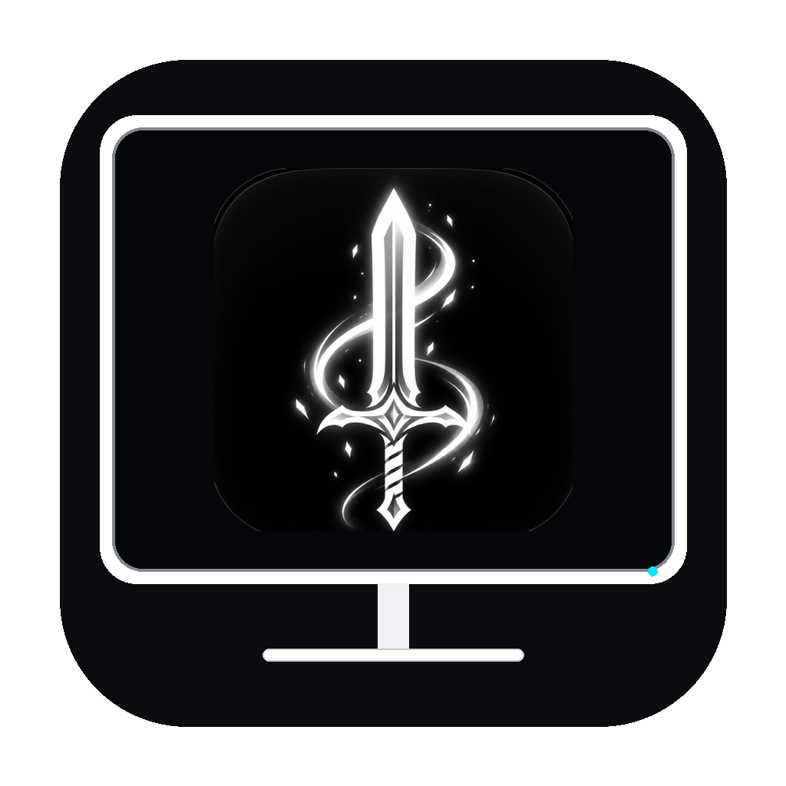

SwordTV
EN VIVO
Catálogo de Películas
Series Completas
Anime en Español & Japonés Subtitulado
Zona Infantil & Familiar 🐥
Partidos y Eventos en Directo ⚽🏎️
Canales de Deportes 24/7
Telenovelas Turcas, Latinas & Clásicas
Catálogo Maestro en 4K Ultra HD & HDR
Canales de Música & Conciertos 🎵
Documentales, Cultura & Ciencia 📚

0
Canales Favoritos
0
Películas / Series
0
Historial Reciente
⚙️ Preferencias Generales (Activas para Todos los Usuarios)
Idioma Predeterminado
Español seleccionado como idioma del sistema
Aceleración por Hardware (Apple Silicon M4 & Metal 3)
Decodificación nativa VideoToolbox / AVFoundation optimizada para Media Engine en chips Apple Silicon M4 (H.264, HEVC y AV1 por hardware) con renderizado zero-copy acelerado por Metal 3.
⚡ Chip Detectado: Apple Silicon M4 (Media Engine Activo • 60 FPS • Metal 3)
⚡ Revisión de canales en vivo
Filtro de canales sin respuesta
Comprueba cada URL HTTP y, en HLS, consulta el manifiesto y un segmento para mostrar su estado reciente.
0 canales revisados
3,252
Total en Base de Datos
0
Responden
0
Sin respuesta
Archivo exportado listo para WebOS IPTV Player en:
Documentos/ListaActual.m4u y ListaActual.m3u
📺 Opciones del Reproductor
Relación de Aspecto Inicial
Formato predeterminado al abrir una transmisión
Calidad Preferida de Streaming
Resolución inicial si está disponible en la fuente
🔒 Control Parental
Bloqueo de Contenido Adulto (+18)
Solicita PIN para ingresar a la sección de adultos
📡 Gestión de Fuentes IPTV
Cargar Lista M3U Externa
Añade canales adicionales mediante URL M3U / M3U8
🔄 Catálogo y Actualización Dinámica
Actualizar Catálogo al Iniciar la App
Sincroniza y descarga automáticamente los últimos títulos y estrenos cada vez que abres la aplicación
Estado de la Base de Títulos
Cargando estado...
⚡ Validador de Canales y Filtro de Conectividad
Limpieza de Señales Inactivas
Comprueba la respuesta de la lista HLS y su primer segmento. Los canales sin respuesta se pueden ocultar y revisar de nuevo.
ℹ️ Acerca de SwordTV
SwordTV para MacOS · 1.1.4
Desarrollado por: ChOe - Motor Rust y WebKit